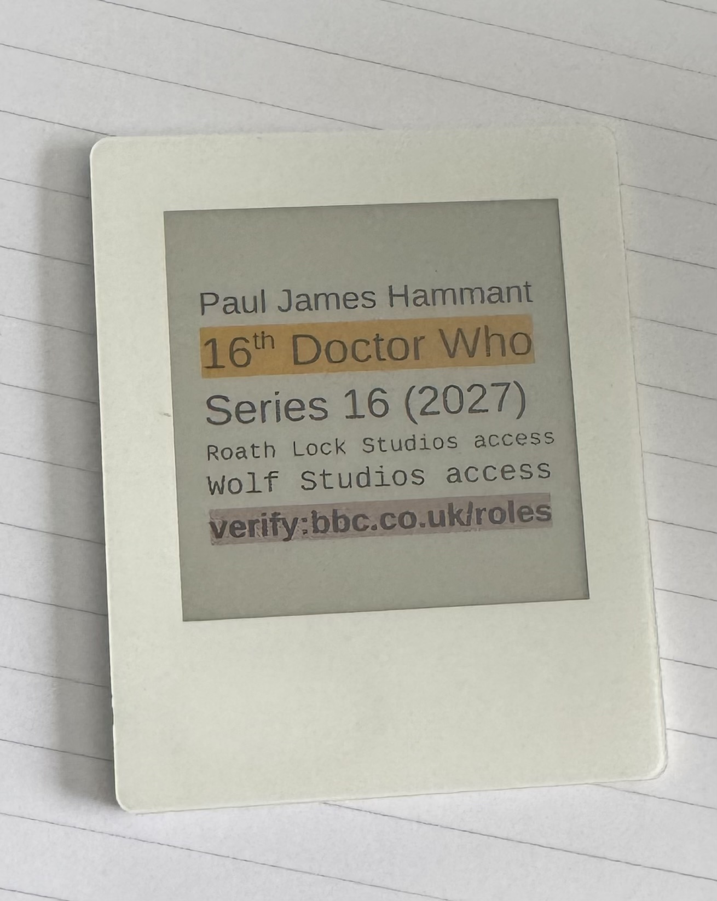
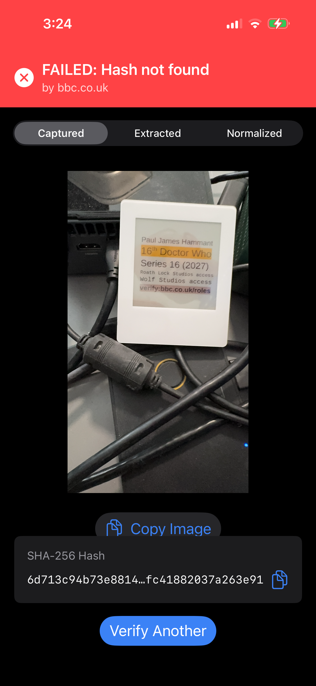
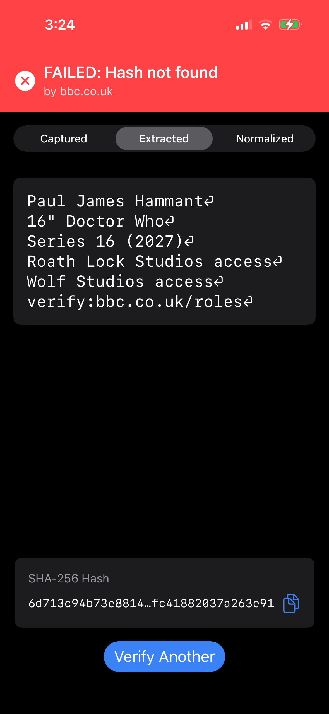
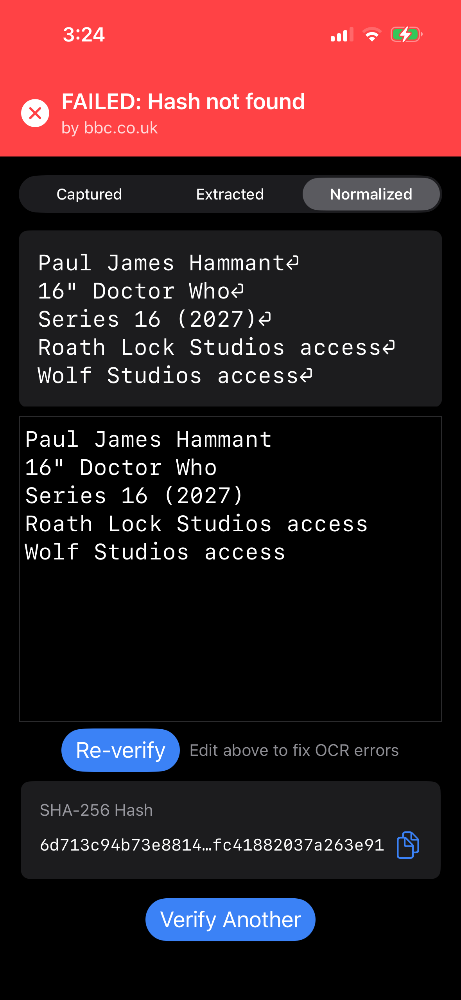

Three OCR Failures on One e-Ink Card — and Why Showing Your Working Beats Hiding It
I made a cheap prop credential, pointed the Live Verify iOS app at it, and it failed to verify — three separate times, for three genuinely different reasons. Two were bugs in our own code, and they're now fixed. One is a lesson about how you print a credential in the first place. None of them was solved by letting the app quietly "correct" what it read until something passed — and that restraint is the whole point of this post.
The card
The prop is a mock BBC role-access pass:
Paul James Hammant
16th Doctor Who
Series 16 (2027)
Roath Lock Studios access
Wolf Studios access
verify:bbc.co.uk/roles
bbc.co.uk/roles is fiction,
a showcase prop — there is no such endpoint. The card is a demonstration object, not a real
BBC credential.The hardware matters to the story. The display is a Vidabay e-ink panel, about $30 — cheap, low-power, reflective. That's exactly the kind of surface a real-world "smart credential" might use, and it is a genuinely harder capture than crisp laser print: low contrast, a tinted background, and a matte reflective finish that throws glare under a lamp. ($30 is today's price and will fall; a re-writable credential card only makes mass-market sense once the panel is nearly disposable, and that's the trajectory. This particular panel is also small, and too slow to re-write over an NFC tap to feel smooth — neither a dead end, but honest limits as of this card.)
Why one wrong character is fatal
Live Verify hashes the exact text of a claim and asks the issuer's domain whether that hash is one it stands behind. SHA-256 is deliberately brittle: change a single byte of input and the output is a completely different hash. That brittleness is the point — it's what makes tampering detectable — but it cuts both ways. If the text the app feeds into the hash differs from the registered text by even one character, the lookup fails. Not "close." Failed.
So every one of the three failures below comes down to the same thing: the bytes the app hashed were not the bytes the issuer hashed. What differs is why.
Failure one: Apple's OCR read "Wolf" as "wolf"
The app's Extracted tab shows exactly what Apple's Vision OCR pulled off
the image, character for character. In an early run, the fifth line came back with a
lowercase w: wolf Studios access. The card says
"Wolf" (capital W). W (0x57) and w (0x77) are
different bytes, so the hash of the lowercase version is nothing like the correct one.
This isn't Apple being bad at OCR — Vision is excellent. It's that case is genuinely ambiguous at small sizes, especially for letters whose upper- and lowercase forms differ only in scale (c/C, o/O, s/S, w/W, x/X). Photograph those off a low-contrast e-ink panel at a slight angle and a recogniser will occasionally hedge toward the more common lowercase form. It's real, it's understood, and — crucially — it is recoverable by a human in the editable Normalized pane. Fix the one letter, re-verify, done.
Failure two: a claim line got dropped before the hash
This was the subtle one. In another run, the Normalized tab — the text that actually gets hashed — showed only three lines: name, title, series. Both studio-access lines were gone. Those are substantive claims (what this person is authorised to access) and they should have been hashed. Their disappearance meant the app hashed a different, shorter credential than the one on the display — and the failure that actually matters is that kind, not a visible typo.
The cause was a three-part collision.
The card word-wrapped a line I didn't want wrapped
The panel firmware lays text out to fit a narrow display, and long lines wrap. Every wrap is a fresh opportunity for what follows to be mis-ordered — the claim lines should have been authored to stay atomic, and weren't.
Apple's OCR scrambled the reading order
Vision does not hand back "lines, top to bottom." It returns an unordered set of
recognised-text regions, each with a bounding box; turning those 2-D boxes into one ordered
string is the app's job, not Vision's. On the angled, low-contrast capture, Vision returned
"Roath Lock Studios access" after the verify: line, merged onto it:
Paul James Hammant
16th Doctor Who
Series 16(2027)
Wolf Studios access
verify:bbc.co.uk/roles Roath Lock Studios accessThe pipeline assumed everything after verify: was garbage
Live Verify found the verify: line and hashed only the lines before
it — treating anything on or after that line as post-URL noise (dust, a stray mark), which is
usually reasonable. But with a real claim line stranded after the URL, that assumption
silently truncated the credential. The hash was computed over four lines, not five. It never
matched, and never could — the app was faithfully hashing a truncated claim, then showing a
red "FAILED: Hash not found — by bbc.co.uk" that blamed the issuer for our own
mistake.
LineAssembler.swift), shared by every path whose text gets hashed. Regions are
sorted top-to-bottom first and grouped against a running centre-line — with a
horizontal-overlap guard: two regions that overlap side-to-side can't be on
the same physical line, whatever their vertical positions suggest. That alone kills the
verify:… Roath Lock… merge. And post-verify: truncation is now a
loud, distinct error — if any text is stranded on or after the URL line, the
app hashes nothing, contacts no issuer, and says so plainly, instead of blaming the domain.
A headless test feeds the exact scramble and asserts the lines reassemble in order.Failure three: a superscript "th" became a quote mark
With reading order fixed, the same card produced a fresh, cleaner failure — and it's a good one, because it's nobody's code bug. Here's the capture and the result:


16" Doctor
Who.
The card says 16th Doctor Who — with a typographic
superscript "th". Apple's OCR read that raised "th" as a double-quote
mark: 16" Doctor Who. Different bytes, different hash, `FAILED` — but
this time reading order and truncation are both correct, so it's a clean, single-glyph miss.
Three things stacked to cause it, and they're worth separating:
- The card was authored with a superscript ordinal. A raised, shrunk "th" is the smallest, highest-detail glyph on the whole card — the first thing to break.
- The card was small in the viewfinder. Compared with earlier runs it
sits well back among the cables, so that already-tiny superscript is only a handful of
pixels tall — right where a recogniser collapses detail into the nearest simple shape, a
". - Glossy, low-contrast e-ink under a lamp. Less edge definition to work with in the first place.
The honest fix here is not in the app. It would be trivial — and wrong — to teach
the pipeline that a " might mean "th" and silently rewrite it. That's the exact
guess-dressed-as-a-read we refuse everywhere else: it would make this card pass and quietly
destroy the guarantee. The right fixes are upstream: author the card with a plain
"16th" rather than a superscript, and fill the frame when you
capture. And the safety net stays where it belongs — the editable Normalized pane, "Edit
above to fix OCR errors": change the " to th, re-verify, and it
goes green. (A "card too small — move closer" capture hint is a reasonable future
affordance; that's a prompt, not a silent correction, so it stays on the right side of the
line.)
Why the app fails loudly and shows its working
The tempting "fix" for all three would have been the same wrong move: lowercase everything,
fuzzy-match, map "→"th", "try a few variants" until something verifies. Every one
would have made this card pass — and turned the verifier into a rubber stamp. A
system that massages input until it matches is no longer telling you a document is authentic;
it's telling you it found something close enough, which is exactly the ambiguity Live
Verify exists to remove.
So the app does the opposite. It fails loudly and shows every stage of its working in three tabs:
- Captured — the raw image, so you can see the card was small, glossy, and angled.
- Extracted — precisely what OCR produced, character for character and
in the order it returned them. This is where you see the lowercase "wolf", the scrambled
order, and the
16"with your own eyes. - Normalized — the exact text about to be hashed, editable, with a Re-verify button and the note "Edit above to fix OCR errors."
That transparency is the reason any of these were findable — and, for failure two, diagnosable: holding Extracted and Normalized side by side is what exposed the stranded line and, later, the scrambled reading order that caused it. A tool that showed only a green or red badge would have hidden all three. The failure is legible, and legibility is the feature.
The lessons
- The hash is unforgiving on purpose, so the input pipeline must be inspectable. You can't make SHA-256 tolerant without making it useless. The only honest place to absorb OCR imperfection is before the hash, in the open, with a human able to see and correct what the machine read.
- Never silently discard or "correct" content — surface it. "Ignore
everything after the verify line" was fine until OCR stranded a real claim there; that
truncation is now loud. And a
"is never quietly rewritten to "th". - Don't trust OCR reading order. Vision returns unordered regions; assembling them is the app's job, and a horizontal-overlap guard beats trusting vertical positions on an angled capture.
- Author credentials to survive OCR. Avoid glyphs that collapse under pixels — superscript ordinals, fancy typography — and lay out claim lines so they don't wrap. The smallest, fanciest glyph breaks first.
- Fill the frame. A card small in the viewfinder starves the recogniser of the very detail (a superscript, a case distinction) that decides the hash.
- Cheap hardware is a first-class test case. A ~$30 Vidabay e-ink panel is where credentials are heading. A pipeline that only works on pristine laser print doesn't work.
One prop card, three failures, three different classes: a case misread, a reading-order scramble that silently truncated the claim, and a superscript read as punctuation. Two were our bugs and are fixed in the shipped code. One is a reminder that how you print and capture a credential is part of the system too. And at no point did the app guess its way to a false pass — it showed exactly what it read, why it stopped, and handed back a one-character fix. That's not a workaround for the design. That is the design.